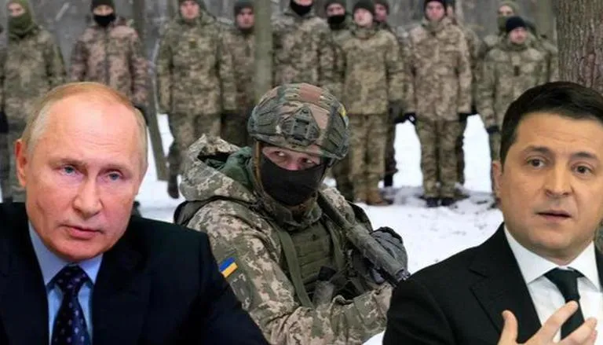
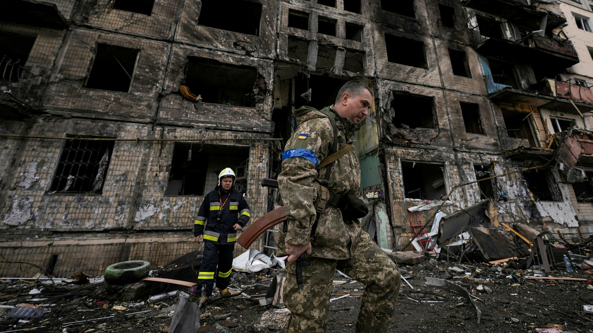

In early December 2021, US intelligence officials determined that Russia was planning to deploy as many as 175,000 troops near Ukraine’s border in preparation for a possible invasion that they believed could begin in early 2022. The Russian leader's initial aim was to overrun Ukraine and depose its government, ending for good its desire to join the Western defensive alliance Nato. After a month of failures, he abandoned his bid to capture the capital Kyiv and turned his ambitions to Ukraine's east and south.
US Treasury Secretary Janet Yellen issued a call for large-scale economic assistance to Ukraine, warning that the amounts of help pledged to date won’t even meet short-term needs as the nation struggles with the devastation wrought by Russia’s invasion. “Eventually, Ukraine will need massive support and private investment for reconstruction and recovery, akin to the task of rebuilding in Europe after 1945,” Yellen said in a speech in Brussels Tuesday. “What’s clear is that the bilateral and multilateral support announced so far will not be sufficient to address Ukraine’s needs, even in the short term.”
